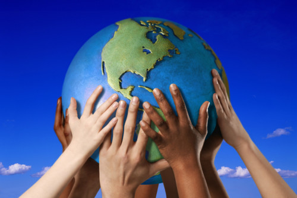

Back
Back
Digital Literacy
| August 7, 2021


Who is a digital literate?
A person’s identity is who they are, and/or what makes them unique. In the context of our digital world, a literate person is knowledgeable, competent and up-to-date with basic digital tools. A digital literate must possess digital skills which birth the competency to use digital devices independently. The term ‘digital’ qualifies the word “literacy by referring to a person’s willingness to interact via online platforms.
In light of the just-concluded #WYSD2021, the role of digital expertise has become critical and central to the promotion of social, ethical, emotional, academic, and cognitive abilities. Studies show that in line with technological advancements, digital citizenship will foster economic growth and resilience however, citizens must possess sufficient skills in order to live fulfilling lives.

The American Library Association (ALA) defines digital literacy as "the ability to use information and communication technologies, meaning that a total digital citizen must be able to find, evaluate, create, and communicate information effectively.” This demonstrates that gaining digital skills can promote digital inclusion and make beneficiaries better change agents.
The Tech4Dev Women Techsters initiative stresses how upskilling is possible anywhere, and with the right learning mindset, becomes more rewarding and enjoyable. The use of internet in Nigeria is managed and regulated by the Nigerian Communication Commission [see Internet code of practice] setting a guide as to how people must behave when surfing the internet.
The code explicitly outlines terminologies related to the use of internet such as lawful content, parental control measures, spam filter, internet access service provider etc. Furthermore, the 12-page document clearly highlights standards for open Internet access both for the user and the provider while noting the significance of online protection of minors and other vulnerable dependents. It is highly important that a citizen use the internet responsibly.
Proper utilization of digital tools enables citizens to contribute effectively to nation-building in form of voting participation, advocating for high quality education and the rightful use of social media. For schools, teachers and students, it is important to navigate useful topics, such as cyberbullying, online safety, privacy, digital literacy and well-being. Becoming a digital literate is crucial to staying relevant, employable and engaged and in this case, non-governmental organizations (NGOs) such as Tech4Dev are actively creating opportunities for people to learn and acquire skills that will take them one step closer towards digital independence. Read one of their stories here.
We are in the digital age – saturated and surrounded by the rise of the Internet. The world right now consists of various demographic groups with different needs (characteristics) and different ways of living (culture). Due to the recent pandemic, the new normal is driving large numbers to digital literacy in order to earn a living, knowing that the internet is here to stay for a very long time.
Luckily, the internet is not identity-biased - it belongs to everyone- all demographic groups from all corners of the world regardless of age, gender, occupation, nationality, ethnic background, sexual or physical orientation to name a few. In South Africa, Digital Citizenship Week celebrated from 14th to 18th October is a call for global entities to rethink their digital impact.
In fact, digital literacy has become highly essential as lack of it can lead to social decline especially in marginalized communities. Throughout the world in 2020, statistics show that there was a striking usage of the internet and Africans were not left out. However, the United Nations Development Program (UNDP), posits that more than 4 billion people still do not have access to the Internet with 90% found in developing regions like Africa.
Tech4Dev’s mission is to continuously reach millions of citizens across Africa with digital knowledge and skills ensuring beneficiaries are equipped and responsive to new demands by using digital platforms. Everyone should be aware and realize their right to be digital literate and to exercise this right and privileges. Digital literacy in itself requires a sense of safety, critical thinking, understanding digital risks and security, capacity building, as tools that impact the greater good of our society.